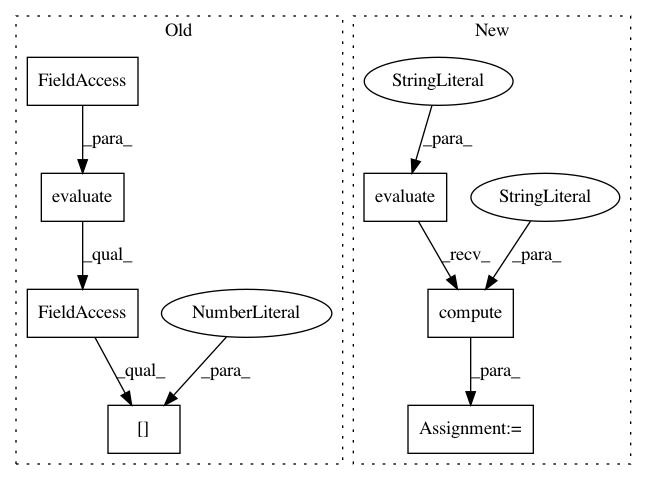

9049298ad2130c2271df32fdbd51841e0351aae6,tests/learning/test_evaluators.py,TestMentionLevelEvaluator,test_overlapping_strictness,#TestMentionLevelEvaluator#,68
Before Change
def test_overlapping_strictness(self):
evaluator = MentionLevelEvaluator(strictness="overlapping")
evaluation = (evaluator.evaluate(self.dataset)).l[0]
self.assertEqual(evaluation.tp, 3) // the 3 exact matches
self.assertEqual(evaluation.fp, 1) // the 1 spurious
self.assertEqual(evaluation.fn, 2) // the 2 missing
After Change
def test_overlapping_strictness(self):
evaluator = MentionLevelEvaluator()
evaluation = (evaluator.evaluate(self.dataset))("TOTAL")
self.assertEqual(evaluation.tp, 3) // the 3 exact matches
self.assertEqual(evaluation.fp - evaluation.fp_ov, 1) // the 1 spurious
self.assertEqual(evaluation.fn - evaluation.fn_ov, 2) // the 2 missing
self.assertEqual(evaluation.fp_ov, 3) // the 3 overlapping
self.assertEqual(evaluation.fn_ov, 3) // the 3 overlapping
ret = evaluation.compute("overlapping")
self.assertEqual(ret.precision, 9 / 10)
self.assertEqual(ret.recall, 9 / 11)
self.assertAlmostEqual(ret.f_measure, 2 * (9 / 10 * 9 / 11) / (9 / 10 + 9 / 11), places=5)
In pattern: SUPERPATTERN
Frequency: 3
Non-data size: 7
Instances
Project Name: Rostlab/nalaf
Commit Name: 9049298ad2130c2271df32fdbd51841e0351aae6
Time: 2016-03-30
Author: i@juanmi.rocks
File Name: tests/learning/test_evaluators.py
Class Name: TestMentionLevelEvaluator
Method Name: test_overlapping_strictness
Project Name: Rostlab/nalaf
Commit Name: 9049298ad2130c2271df32fdbd51841e0351aae6
Time: 2016-03-30
Author: i@juanmi.rocks
File Name: tests/learning/test_evaluators.py
Class Name: TestMentionLevelEvaluator
Method Name: test_half_overlapping_strictness
Project Name: Rostlab/nalaf
Commit Name: 9049298ad2130c2271df32fdbd51841e0351aae6
Time: 2016-03-30
Author: i@juanmi.rocks
File Name: tests/learning/test_evaluators.py
Class Name: TestMentionLevelEvaluator
Method Name: test_exact_strictness